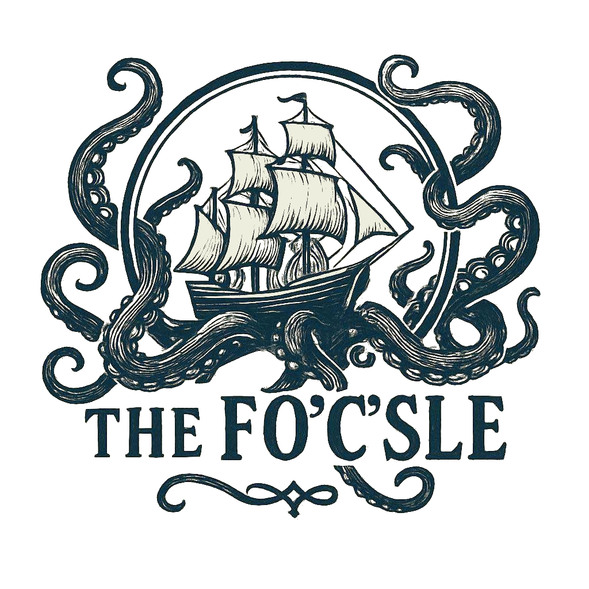
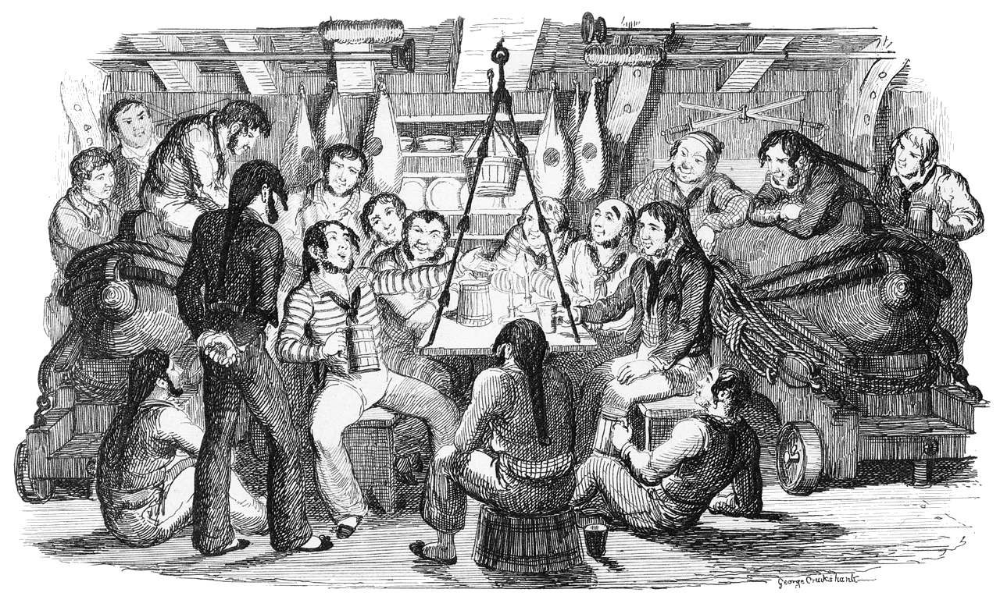

Use this QR code to share this page with others
What's going on here?
We're "The Fo'c'sle," a bunch of singing enthusiasts who gather at Rose & Crown on the 2nd and 4th Friday of every month to sing our favourite sea shanties and folk songs.
What's a Sea Shanty?
A sea shanty, or chanty, is a genre of folk songs that are loosely descended from work songs that arose in the 18th century Europe used to coordinate a group of sailors around a rhythmic task, like pulling up an anchor or hauling on ropes. Of course, there have been countless influences from all over the world since. They're often (but not always) characterised by a single leading singer initiating a call and response from everyone else and a regular, clear rhythm.
Some examples of shanty style songs regularly heard here include Barrett's Privateers, The Wellermen, Leave Her Johnny, Bully in the Alley, Drunken Sailor, Santiana, South Australia and Lowlands Away among many others.
We acknowledge that many sea shanties were created in a bygone era and some may contain certain lyrics or language which are not acceptable by today's standards. We welcome folk from all walks of life and cultures and would love for you to come and sing with us. However, we do ask that you carefully consider the lyrics and language of your chosen songs before singing them.
Do you only sing Sea Shanties?
No, we sing all sorts of other folk songs too such as Skye Boat Song, Northwest Passage, One More Pull, Shenandoah, Wild Mountain Thyme and Oak and Ash and Thorn.
Can I join in?
Yes! Please do! Everyone is welcome, so no matter your ability you can join the crew!
Can I lead a song?
Absolutely! When you're ready to go just wait til the end of a song, ring the bell and let everyone know what you're going to sing and give them a moment to find the words (a little more if they aren't in the songbook) and then go for it!
Do you take requests?
If you have a song you like but don't feel confident leading it, ask around and it's very possible someone else in the group can do it, but no guarantees.
Will you sing Happy Birthday for someone?
Sure! Bring your party to us and let us know the birthday person's name — we also have a birthday shanty!
When is the next Shanty Night?
The Fo'c'sle meets on the 2nd and 4th Friday of each month at the Rose & Crown in South Bank, Brisbane. The Next Sessions are on the 10th of April, 24th of April, 8th of May, 22nd of May, 12th of June, 26th of June, 10th of July, 24th of July, 14th of August, 28th of August, 11th of September, 25th of September, 9th of October, 23rd of October, 13th of November, 27th of November, 11th of December, 25th of December. Follow us on Facebook to get updates on future sessions
Who made this website?
This website was created by Genna, using the Fo'c'sle Songbook compiled by Graham White, John Thompson's Oz Folk Song a Day blog and other sources.
Copyright Notice
This songbook contains lyrics to traditional and contemporary folk songs collected for use at our community singing sessions. We acknowledge that some songs remain under copyright. This website is non-commercial, free to access, and exists solely to support communal singing. No profit is made from this content. If you are a copyright holder and have concerns about your work appearing here, please contact us and we will promptly remove it.